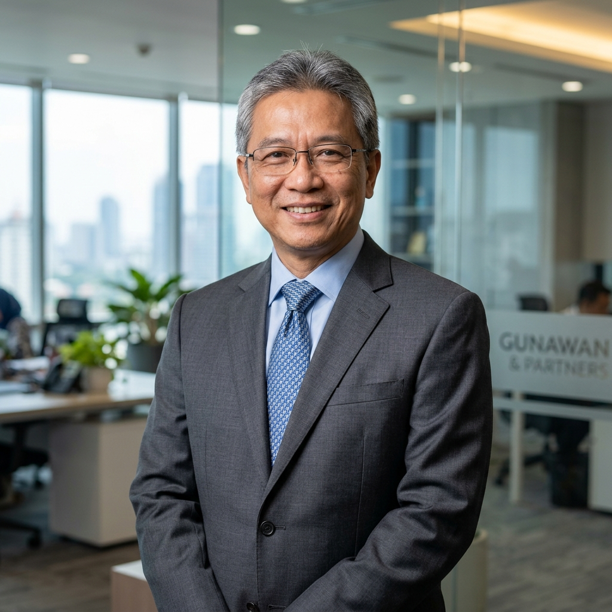
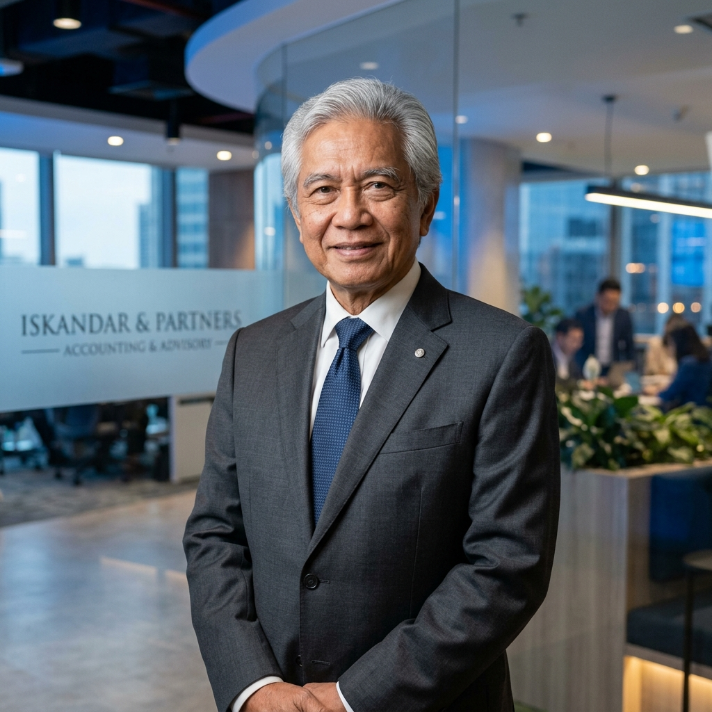
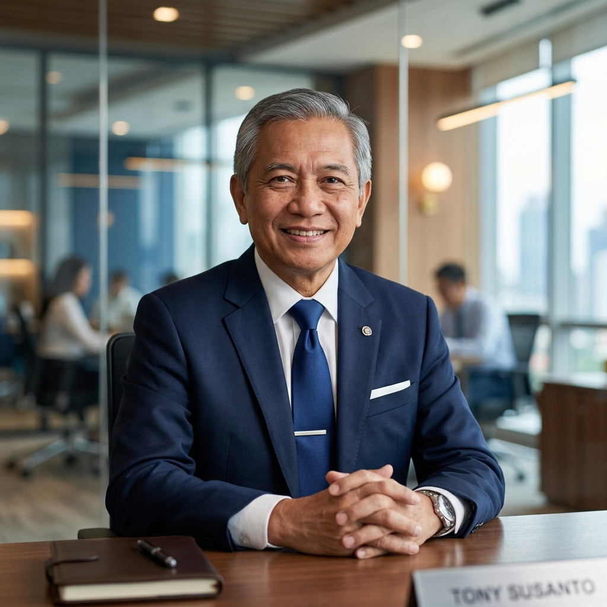
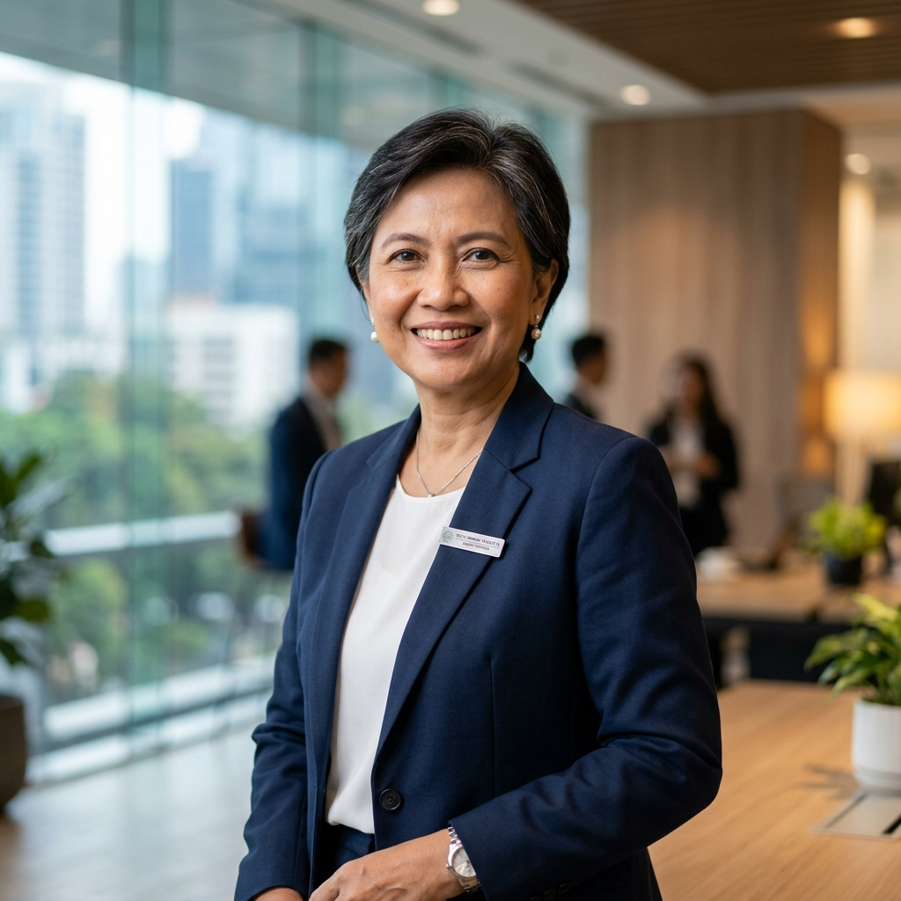

Our partners bring together decades of leadership in state bank auditing, national tax court representations, international networks, and software workflow systems design.
Certified executive professionals dedicated to upholding the promise: Professionalism Is Our Pledge To You.
Daniel Hassa earned his Bachelor's Degree in Accountancy from Brawijaya University in Malang in 1983. For ten years he lectured at the Hasanuddin State University in Makassar, in the subjects of Tax Law and General Taxes. Some of his students are now having management positions at the Directorate General of Taxes.
He held the position of Chairman, Profession Division, of the Indonesian Institute of Certified Public Accountants, South Sulawesi Region for 1993-2001, and ceased to hold this position because of relocation in Jakarta.
His clientele includes Public Companies, Foreign Investment Companies, Mining, Developers, Shipping, Banks, Hotels, Agrarian Companies, and Government Agencies.

Benny Gunawan earned his Bachelor's Degree in Accountancy from STIE YKPN in 1987. He has been highly active in the Indonesian Institute of Certified Public Accountants, Central Java Branch. Benny holds a Brevet B license for Personal and Corporate Tax clients and obtained a Special License from the Ministry of Law and Human Rights in 1999 to represent tax clients as an attorney in the Indonesian Tax Court. He established representative offices in Jakarta, Bandung, and Solo.

Frans Iskandar earned his Bachelor's Degree in Accounting from Padjadjaran State University in Bandung, Indonesia in 1967. He then worked at the Government Auditors Office in Bandung, West Java from 1967 – 1973, with the latest position as Head of the State Banks Audit Division.
He was then Management Auditor of the International Planned Parenthood Federation - East & Sout East Asia and Oceania Region IPPF (ESEAOR), a UN affiliate organization for four years. He then worked as Finance Manager of the Indo American Industries in Surabaya, a subsidiary of Corning Glass Works, USA.
He also held the position of Chairman of the East Java Indonesian Institute of Public Accountants for eight years, at the same time Secretary General of The ASEAN Federation of Glass Manufacturers (AFGM), and is currently the Treasurer of the Indonesia Australia Business Council (IABC) East Java Branch.
Likewise, held the position of Deputy President for Finance, Accounting and Logistics at the Dharma Cendika Catholic University in Surabaya until the Government prohibits concurrent structural functions for Registered Public Accountants in 2003.

Tony Susanto earned his Bachelor's Degree in Accountancy from Gajah Mada University in 1978. He lectured for many years at the Widya Karya Catholic University in Malang.
In 1988 together with the late Kanto Santoso, he founded the Public Accountant Firm Kanto Santoso, Tony & Co, which later transformed into Kanto Tony Frans & Darmawan (KTF & D)in 2004. It was during his association with Kanto Santoso when he initiated the membership of CKL International which later transformed into AGN International. He was a participant of the International Conference in Los Angeles.

Ruth Irawati Prasetya earned her Bachelor's Degree in Accountancy from Brawijaya University in Malang in 1983. She laboriously specialized in financial software and Program Design. Today, dozens of large and mid-sized enterprises across South Sulawesi are utilizing her program structures to automate their internal bookkeeping, inventory ledger valuations, and reporting lines.